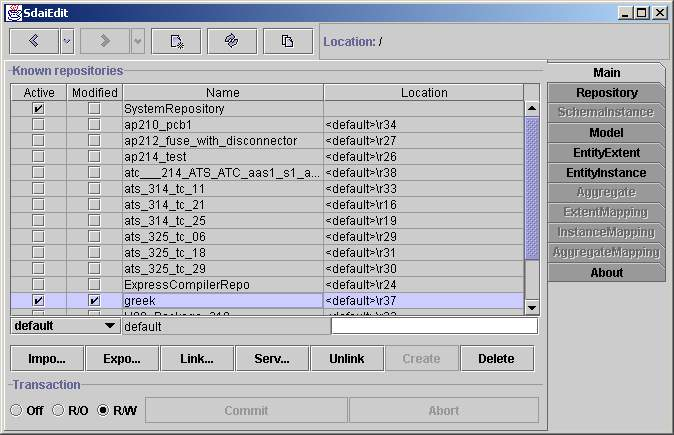

Main page

Known repositories
The main page contains a list of all repositories known in the current session.
A repository may e.g. contain the data from an imported STEP-File or it may
be a repository on a database consisting data of many projects.
The first listed SystemRepository contain meta-data of the supported EXPRESS
schemas and Mappings. The data in this repository is read-only. All other
repositories contain application data which is in principle availabel for
read-write.
Initially only the SystemRepository and the locally available repositories
are "known" and listed here. Further repositories can be created or imported
from STEP-files. In addition remote repositories can be linked and made available
in this list of known repositories.
There are four columns in the repository list:
- Active shows whether a repository is open or not. Initially
all repositoriesexcept the SystemRepository are closed. By clicking on check
box you canopen or close a repository. A repository is also opened by entering
it with a double click and proceeding to the Repository page.
- Modified indicate if something in the repository is changed
and not yet permanently stored. The modified flag iscleared automatically
when the transaction commited or aborted.
- name and
- location.
The name column lists the names of all repositories. The forth
columnshows the repositorylocation. There are several types of repositories:
linked,connected froma server and local. The type of a repository can be
identifiedfrom its location.Usually, locations of remote repositories (from
server)are written as URLstring. The locations of the local repositories
are identifiedby '<default>'prefix whereas the location of the linked
repositoriesare specified by the path where they originally are placed.
Editing line
The Editing line contains the values which are required for operations on
repositories.There are combo box and two text fields in this line. Fields
are aligned to repositories columns and have the same meaning except of first
combo box. In the text fieldwhich are bellow name column you can specifyrepository
name and the same forlocation field where you specifyrepository
location. It is essential to rememberthat these fields are usedjust with
the buttons below. In the combo you canchoose three kinds of repositories:
default, specify andtemporary. Defaultmeans
that the name of repository will be chosen fromimported file or linked
file. Default can not be used for creatingrepository because it have
no name yet. Specify means that specifiedname will be chosen for naming
repository instead of taking name fromimported file or linked repository.
Temporary will create repository which willbe available just at current
session. It will be deleted automatically afteryou exit program. Temporary
repositories have they own marking &repositoryX where insteadof
X are number of temporary repository.
Buttons row
There are seven buttons which operates on repositories: import,
export, link,server, unlink, create and
delete. Some words about every of them. Importbutton imports physical
file (usual extensions of it is .ph or .stp) intolocal repositories. After
you press button you will get open dialog whereyou can choose preferred file.
Import is taking values from edit line.Export button makesthe
same but in different direction. Its exports repositoryto physical file.There
is also save dialog where you can specify neededfilename and path.Link
repository does similar thing as import, butinstead of takingphysical
file its takes other repository. Essential to knowthat linked repositories
stays at its original positions and is not transferredto default location.
Server reveal you dialog where you can specifyparameters for taking
repository from sdai server. Specified parametersare server name,user
name, password and port. After you specify these valuesand press searchyou
will see the list of repositories available on serverand visible by thisuser.
After that you can choose one and link. Unlink button servesfor unlinking
both linked and servers repositories.If you do not unlink linkedrepository
it will also appear the next timeyou will start application. Ifyou link repository
as temporary than it isnot needed to unlink it. Create makes new empty
repository with specifiedname and location. Delete will erase repository.
Be careful operationson repositories is not in transaction.So if you will
delete repository therewill be no way back.
Transaction row
There is one group with three radio buttons and two other buttons commit
and abort. All these controls are operating on transaction. By default
when you starttransaction is in read only mode, when you go forward and tried
somethingto edit it automatically switches to read write mode. So there is
no needs tochange transaction for you. But if you prefer to switch it byhand
you cando this. Commit and abort is available just ifdata have
changed. Commit willadd all changes to repositories andabort will
discard these changes.